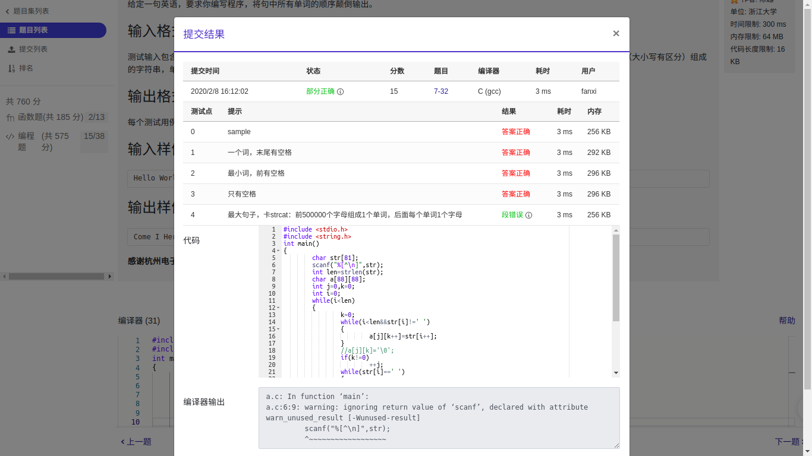

1.单词长度
你的程序要读入一行文本，其中以空格分隔为若干个单词，以.结束。你要输出每个单词的长度。这里的单词与语言无关，可以包括各种符号，比如it’s算一个单词，长度为4。注意，行中可能出现连续的空格；最后的.不计算在内。
输入格式：
输入在一行中给出一行文本，以.结束
提示：用scanf("%c",...);来读入一个字符，直到读到.为止。
输出格式：
在一行中输出这行文本对应的单词的长度，每个长度之间以空格隔开，行末没有最后的空格。
输入样例：
It's great to see you here.
输出样例：
4 5 2 3 3 4
1 |
|
2.说反话
给定一句英语，要求你编写程序，将句中所有单词的顺序颠倒输出。
输入格式：
测试输入包含一个测试用例，在一行内给出总长度不超过 80 的字符串。字符串由若干单词和若干空格组成，其中单词是由英文字母（大小写有区分）组成的字符串，单词之间用 1 个空格分开，输入保证句子末尾没有多余的空格。
输出格式：
每个测试用例的输出占一行，输出倒序后的句子。
输入样例：
Hello World Here I Come
输出样例：
Come I Here World Hello
1 |
|
3.说反话加强版【未AC】
给定一句英语，要求你编写程序，将句中所有单词的顺序颠倒输出。
输入格式：
测试输入包含一个测试用例，在一行内给出总长度不超过500 000的字符串。字符串由若干单词和若干空格组成，其中单词是由英文字母（大小写有区分）组成的字符串，单词之间用若干个空格分开。
输出格式：
每个测试用例的输出占一行，输出倒序后的句子，并且保证单词间只有1个空格。
输入样例：
Hello World Here I Come
输出样例：
Come I Here World Hello
我的代码（如下）没有通过最后一个测试点，可能是数组开小了
 1
2
3
4
5
6
7
8
9
10
11
12
13
14
15
16
17
18
19
20
21
22
23
24
25
26
27
28
29
30
31
32
int main()
{
char str[81];
scanf("%[^\n]",str);
int len=strlen(str);
char a[88][88];
int j=0,k=0;
int i=0;
while(i<len)
{
k=0;
while(i<len&&str[i]!=' ')
{
a[j][k++]=str[i++];
}
//a[j][k]='\0';
if(k!=0)
++j;
while(str[i]==' ')
{
++i;
}
}
for(int k=j-1;k>=0;--k)
{
printf("%s",a[k]);
if(k>0)
printf(" ");
}
}
于是把数组开到500001，但是编译时会提示段错误 (核心已转储)
大佬看到帮忙解决下，谢谢!
4.说反话新版(单词逆序，未AC)
Description:
Sakeven 正在对一段文字进行加密，规则如下：
把字符串中的每个单词进行逆序，比如 acm 变成 mca，其他字符顺序不变。
但是这个工作让他一个手写太麻烦啦，于是他想请你写个程序帮助他。
Input:
输入有包括多组数据。每组数据包括一行字符串。
Output:
输出加密后的字符串。
Sample Input:
I Love You
Sample Output:
I evoL uoY
这题我在本地编译能通过，但是提交时会超时
1 |
|
应该是gets()的原因，所以换了scanf，但是会陷入死循环